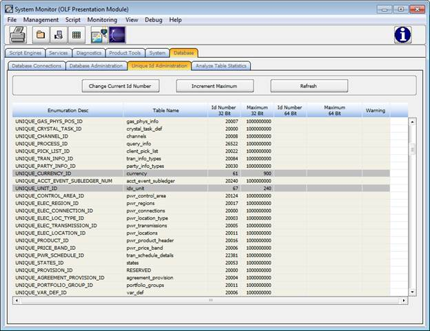
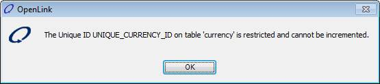

System Monitor - database – unique id administration
Overview
This window shows database table details including enumerations and ID numbers while also providing the functionality to manage the current and limit of unique IDs. The maximum values listed for each table relates to the highest allowable integer that can be used when assigning a value to the “Unique ID” field in a table. In other words, the unique ID maximum value limits the number of records that can be added to a table.
The application provides the standard script “STD_Unique_Table_Size_Check” which determines the percentage of ID capacity that has been used by a selected table.
Access to this window is controlled by Security Privilege #29600, Access Database Tab and #3014, Access Unique ID Administration.
See System Monitor
See Standard Scripts.chm
Accessing This Window/Screen
To access this window:
- Start the OpenLink System.
- From OpenLink Central, click the System Monitor icon

- Select the Database tab.
- Select the Unique ID Administration sub-tab.
The following screen displays:

Some tables are restricted and will only be displayed here for informational purpose. These tables are “greyed out” to let you know that they are different.
In the display below you can see that currency and unit are restricted tables.
If you try to change the current id or increment the maximum for a table that’s “greyed out” the system will display an error message similar to the one shown below:

Other Ways to Access This Window/Screen
The module may also be launched as a service. From OpenLink Central, navigate the menu icon and select Launch Available Services. Select System Monitor from the list box.
Menu Items
This window contains the same menu items as the System Monitor. Menu item availability depends upon the tab being accessed.
Buttons
This window contains the same toolbar buttons as the System Monitor. This tab includes the following buttons:
|
Button |
Description |
|
Select a table and click this button to reset the Current Unique Id Number for a table. You will be prompted for this. The database table is examined and either will prompt with one greater than the highest number found in the table (if different from current_id) or one greater than the current_id if the values are the same or there is no value in the database table as of yet. You can either accept this or enter your own value. Only values greater than the highest value and below the table maximum are acceptable. Security Privilege #76912 – Change Current Unique Id is required |
|
|
Increment Maximum |
Select a table and click this button to set the value by which the ID numbers for that table will increase. If a number is not entered, the system will increment the numbers by 1 million. Security Privilege #3015 – Increment Maximum Unique Id is required. |
|
|
Reloads the system table data in the table. |
Fields
This window contains the following fields:
|
Variable |
Description |
|
Enumeration |
The unique system identifier for the selected table. |
|
Table Name |
The system name of the selected table. |
|
Id Number 32 Bit |
The sequence numbers, or unique ids, that will be generated. |
|
Maximum 32 Bit |
The largest identification number available in the selected table. |
|
Id Number 64 Bit |
The sequence numbers, or unique ids that will be generated. Used by tables with 64 bit or long unique ids |
|
Maximum 64 Bit |
The largest identification number available in the selected table. Used by tables with 64 bit or long unique ids |
|
Warning |
This field is used to display a warning when the current id is getting close to the maximum. Then you should increase the maximum. The message will get displayed when 80% capacity is used up. |
Column Header Menu
To modify a table’s configuration, right-click any column header. The Column Header Menu displays.